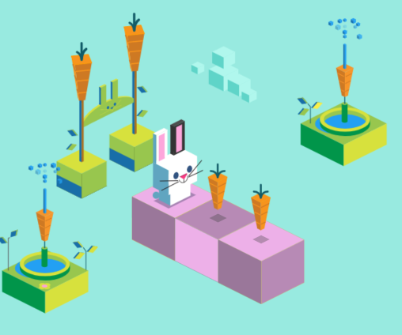

Repete, repete, repete, repete...
for
Material de apoio para a disciplina Linguagem de Programação da UACSA/UFRPE
Produzido pelo prof. João Pimentel

O grande poder da computação vem da capacidade de repetir um conjunto de operações uma grande quantidade de vezes, sem reclamar "ai, isso aqui é muito chato..."
É assim que funciona um filtro do instagram, por exemplo; o computador vai fazer uma certa operação em cada pixel de cada quadro do vídeo. Cada quadro (frame) de uma story tem de 444500 a 2073600 pixels. É muito pixel. É muita repetição.
O Python tem dois comandos de repetição: o for e o while. Também é possível fazer repetição com funções, mas isso fica para depois. Vamos começar pelo for.
Vídeo 1 (36min):
A palavra laço é meio estranha mas é uma tradução do inglês: loop. Sabe os loops de de montanha-russa? Pois é, você vai no loop e meio que volta para o mesmo lugar. No que volta para o mesmo lugar do código, ocorre a repetição.
Se pensarmos na notação matemática, o range(a, b) representa o intervalo fechado em a e aberto em b: [a, b[. Ou seja: de a a b, incluíndo o a, mas sem incluir o b.
A forma geral do range é essa:
onde:
- a é o valor inicial
- b é o valor posterior ao final
- c é o valor do aumento
Exemplo:
range(5, 30, 3) começa no 5, acaba antes do 30, e aumenta de 3 em 3. Ou seja: 5, 8, 11, 14, 17, 20, 23, 26 e 29.
Se a gente usar o range só com dois valores (a e b), o aumento será de 1 em 1. Então:
é a mesma coisa que
Esse exemplo começa do 5, acaba antes do 20, e aumenta de 1 em 1. Ou seja: 5, 6, 7, 8, 9, 10, 11, 12, 13, 14, 15, 16, 17, 18 e 19.
Já se a gente usar o range com um valor só, o intervalo começa do zero e o aumento será de 1 em 1. Então:
Esse exemplo começa do 0, acaba antes do 10, e aumenta de 1 em 1. Ou seja: 0, 1, 2, 3, 4, 5, 6, 7, 8 e 9.
No vídeo, o Guanabara usa o comando +=, que é só uma forma abreviada de fazer um acréscimo.
Ei, é normal essa ideia de repetição dar um nó na cabeça de quem está aprendendo programação, por que é bem diferente do que estamos acostumados a fazer no nosso dia-a-dia. Que tal descansar com esse jogo do Google em que você usa os comandos de repetição para controlar um coelhinho?
Bart é uma personagem da Twentieth Century Fox Film Corporation.
Sonic, Tails e Knuckles são personagens da SEGA.